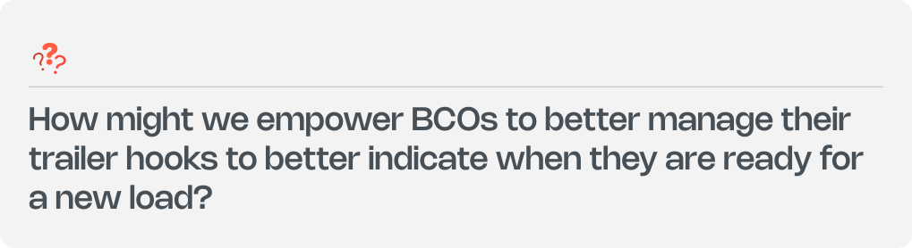
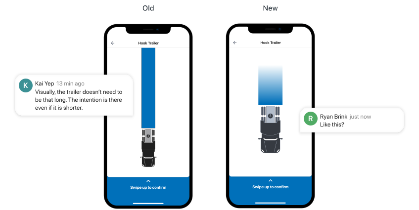
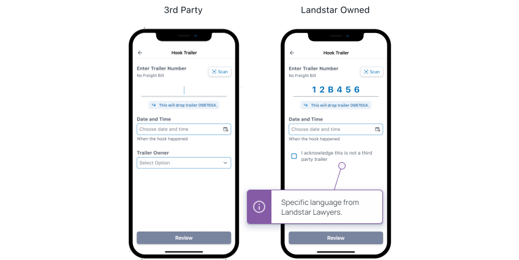

LandstarOne
Unblocking Truck Drivers to Book New Loads: A $28.6 Million Problem
Problem
LandstarOne is a mobile app designed for 11,000+ truck driver (BCOs) for mission-critical operations including booking loads, finding fuel, and staying up to date on safety and compliance regulations.
The Agents, who connect drivers with loads, often failed to update which tractor was attached after a delivery, leaving shipments marked as active. As a result, BCOs couldn't book new loads because it appeared they were still connected to a previous one—even after it had been completed.
If every BCO had this problem once, the net result would be a $28.6 million deficit. 65% BCO loss, and 35% Landstar loss. I was tasked with enabling BCOs to indicate which trailer they were attached to.

How might we...

The User
In order to make informed design decisions, I needed to understand how BCOs hook and unhook their trailers. I visited a trailer pool in Ohio to better understand this process. The hook and unhook feature concept was correct, but my hypothesis on how the feature should be interacted with was wrong.

Wrong Hypothesis
BCOs preferred to type, not scan. There was low confidence that the scan would work well, and BCOs would wear gloves to protect against dirt and grease. Critically, the BCO would be able and ready to type in a trailer number from the drivers seat after the trailer was hooked. The side mirror provided a perfect view of the trailer number.

Competitive Analysis
I intentionally introduced friction into the hook process to reduce errors. By analyzing patterns in other applications, I identified ways to prevent accidental or unwanted hooks — ensuring the solution solved the problem without creating new ones.

The Prototype
I brought my feature concept to Atlanta to validate it with users, using Figma Mirror to simulate the experience with three BCOs. It helped surface pain points and strengthen my user empathy.

Redundancy
During testing, I uncovered a redundancy in the flow: requiring users to manually unhook before hooking a new trailer. By automating the drop of the previous trailer when a new one is hooked, we simplified the process and reduced the chance of human error.


Design Iterations
The visual of the tractor connecting to the trailer helped users understand what the hook action represented in real life. Initially, the trailer was shown to scale, which made it difficult to fit on screen. By trimming the trailer, we preserved clarity while improving usability.

Accurate Logging
To ensure accurate logging, we added a field for drivers to enter when a hook or unhook occurred. While most use the feature immediately after the action, it was important to provide flexibility—letting drivers log it on their terms, not the app's.

Partnering with developers
While working with developers, we uncovered three key edge cases to address. We designed helpful error messages to guide users when: the same trailer was entered twice, a future time or date was input, or the system couldn't sync with the server.

Legal Language
One requirement was to alert drivers when a trailer was owned by Landstar versus a third party—critical for liability reasons. By identifying ownership from the trailer number, we dynamically displayed a disclaimer message to ensure drivers acknowledged the trailer type.

Interactions
The card interaction was crafted to balance intentional friction with satisfying momentum. Initially, BCOs can review trailer details. As they swipe up, the card follows with slight resistance. At the midpoint—where the tractor and trailer visually connect—a pause and haptic tap signal confirmation. From there, the card animates upward automatically, transitioning to a success screen that reinforces task completion.

Final Design
Parting Thoughts
Speaking directly with BCOs gave me a deeper understanding of their day-to-day needs and strengthened my empathy. Many smaller insights—beyond the feature itself—informed future design decisions.
Using a tool like Maze for remote usability testing would have helped us validate ideas earlier and at scale. We later used Maze to test the LCAPP Tire Discount feature—an approach I would now apply more proactively.
This served as a temporary solution, with a more intuitive, beacon-powered connection experience currently in development.